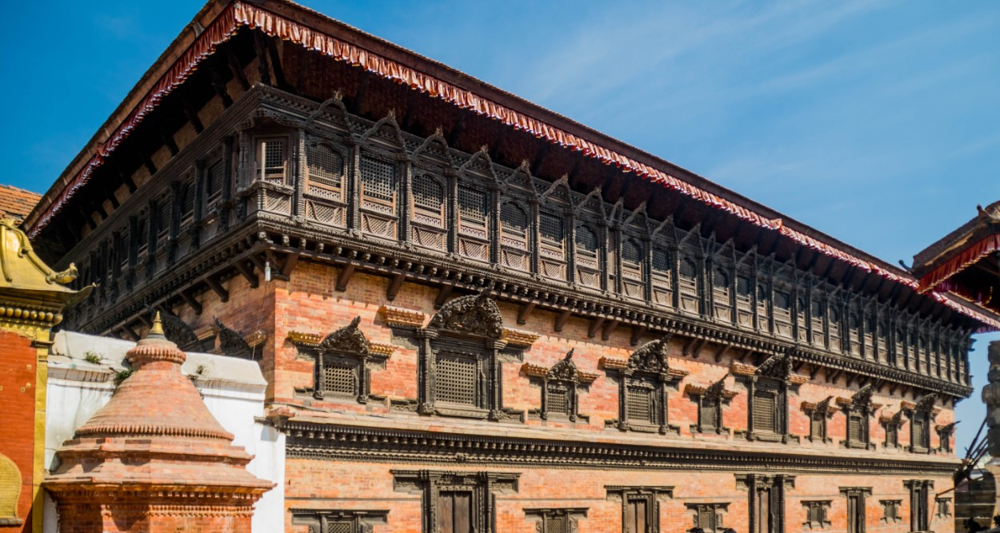

Wooden Hand-Carved Windows (Aakhi Jhyal) and Arts
The Aakhi Jhyal, also known as "eye windows," are a hallmark of traditional Nepali architecture, particularly in the Kathmandu Valley. These hand-carved wooden windows are renowned for their intricate craftsmanship, often featuring detailed carvings that include geometric shapes, floral designs, and religious symbols. The term "Aakhi Jhyal" literally means "eye window," referring to the unique pattern of latticework that resembles eyes. Positioned typically on the upper floors of homes, temples, and palaces, these windows offer both functionality and aesthetic appeal. They allow light and air to pass through while maintaining privacy and protection from the outside. The wood used in these windows is finely carved with great precision, showcasing the expertise of Nepali artisans who have honed their craft over centuries. Each Aakhi Jhyal is a distinct creation, reflecting the skill and creativity of the artisan.
Significance of Nepali Wooden Hand-Carved Windows (Aakhi Jhyal) and Arts
The Aakhi Jhyal carries profound cultural and symbolic meaning in Nepali art and architecture. Beyond their practical use, these windows are seen as protective symbols, believed to keep evil spirits away and bring blessings to the household. The eye-like carvings are thought to provide spiritual safeguarding, and they are an integral part of the design of traditional Nepali homes. These windows also embody the harmonious blend of function and artistry, serving not just as a source of light and ventilation but as a visual expression of cultural values. The detailed craftsmanship of Aakhi Jhyal windows reflects the longstanding wood carving traditions of Nepal, which continue to be a significant part of the nation’s cultural heritage. Today, the preservation of these intricate wooden windows ensures that future generations can admire and understand the beauty and spiritual significance embedded in this unique form of Nepali art.